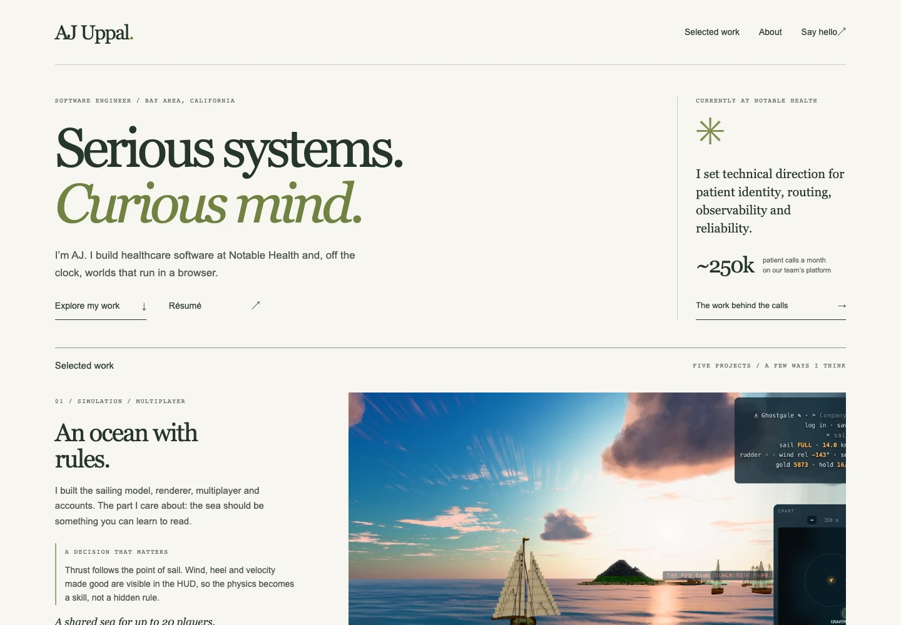
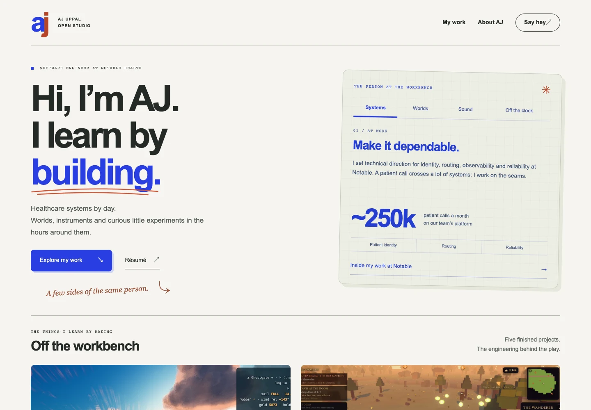
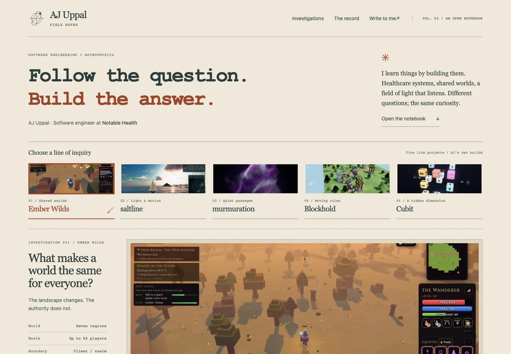
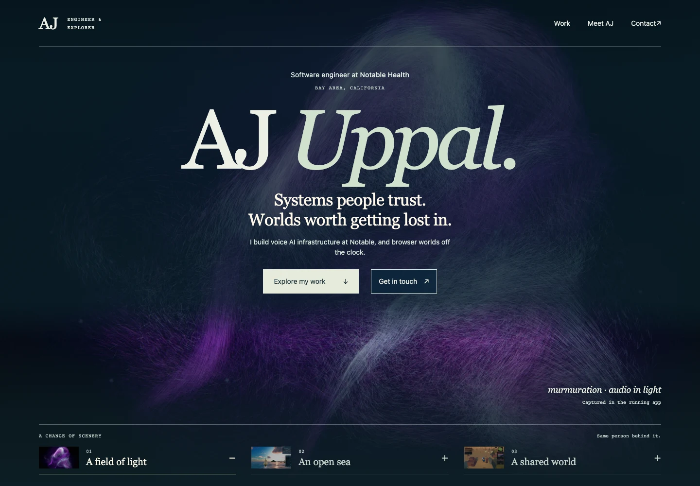

01
The Editorial
Clear writing, deep proof.
A hiring reader gets the work quickly, then can open the engineering behind it.

ROUND TWO / A REFINED SET
The crisp frames, the curiosity, the boat at dawn. Four working refinements that bring AJ’s professional work, personal projects and point of view into focus.
The Editorial
A hiring reader gets the work quickly, then can open the engineering behind it.

Open Studio
One playful control makes AJ’s range memorable while the shelf and cases establish depth.

Field Notes
A technical reader understands the decisions because each project is organized around a real question.

Worldbuilder
Atmosphere can introduce AJ’s creative side when the same page gives equal weight to healthcare systems and technical proof.

THE COMMON THREAD
Every direction keeps project explanations on the page and links to a full, keyboard-friendly case study. The cases name the constraint, the decision, and the evidence, with real captures where they exist.
Open a sample case